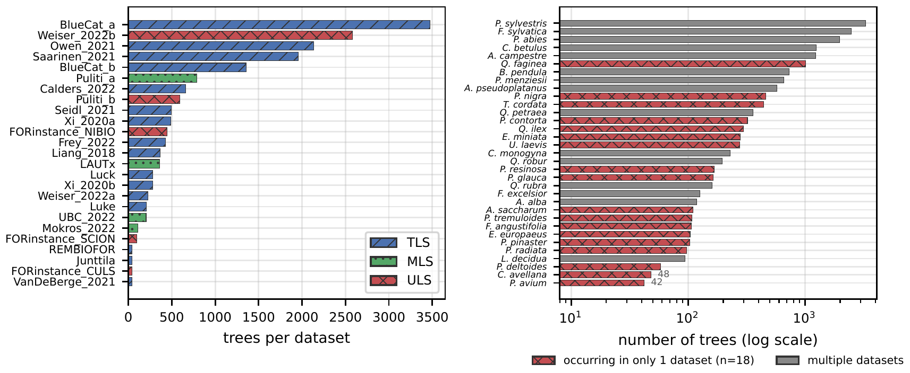
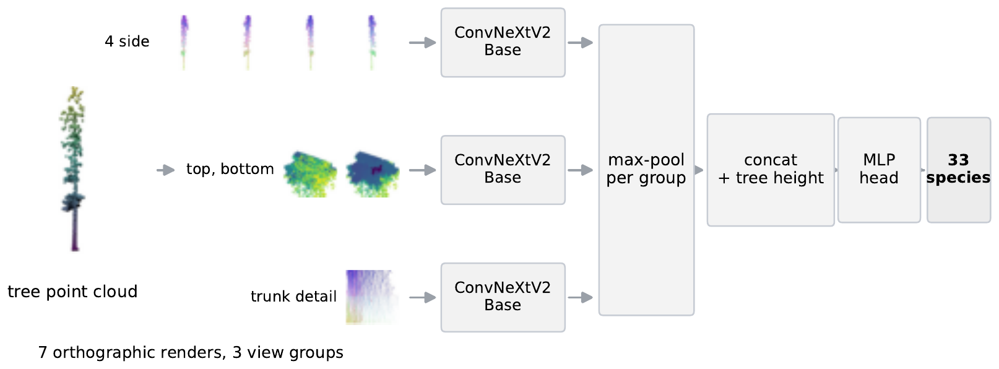
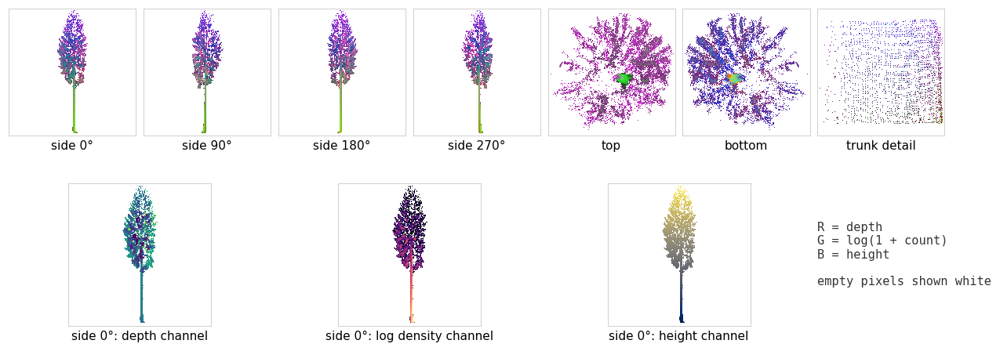
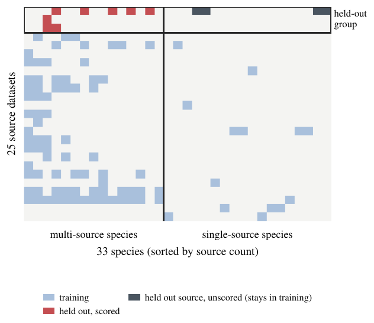
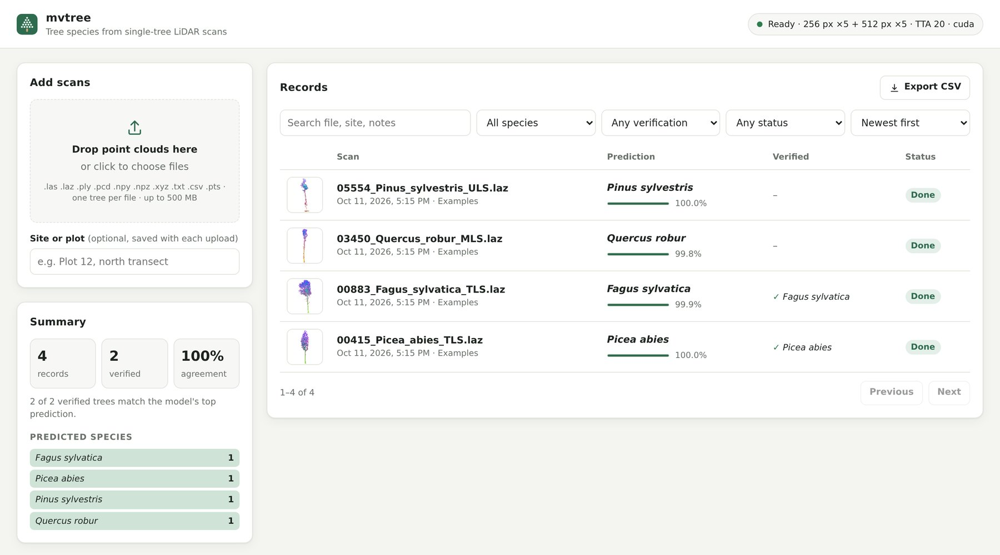
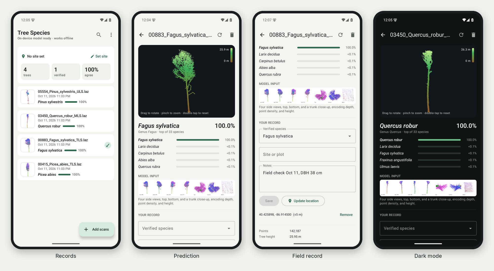

85 seconds, with sound. Every prediction in the film is a held-out prediction.
overall accuracy on the official FOR-species20K hidden test, first on the leaderboard (previous best 79.5%)
accuracy on the same trees once their source dataset is held out of training for their species
labeled trees from 25 source datasets: 33 species, scanned by 3 kinds of LiDAR
FOR-species20K is the largest public LiDAR benchmark for tree-species classification, but high leaderboard scores do not necessarily indicate that a model recognizes species across independently collected forests. The benchmark pools 25 terrestrial, mobile, and airborne laser-scanned datasets, uses a species-balanced hidden test, and splits data across sources with a species-stratified random draw. Using a multi-resolution multi-view ConvNeXtV2 model, we improve hidden-test accuracy from 79.5% to 85.0% and use this first-place model to test whether the official split reflects cross-source species recognition. The balanced hidden test makes official accuracy closer to a macro metric than to public-set overall accuracy. The random split also carries source information: source identity is recoverable from our output probabilities with 69% accuracy, and from raw geometry even within a single species, while 18 of 33 species appear in only one source dataset. Under a source–species holdout, in which each scored species keeps training examples of the same LiDAR type elsewhere, accuracy drops by 46% in the unweighted species mean and 35% in the tree-weighted mean. Retraining controls attribute the drop to the removal’s source structure rather than to reduced training support, and the pattern reproduces on PureForest, where holding out whole forests costs 9 points under matched support. FOR-species20K therefore exposes a harder problem: current models score well on the official split, while species recognition across sources remains open.
Three kinds of LiDAR.
Twenty-five sources.
Every source dataset in FOR-species20K comes from a single kind of scanner, collected by a different team in a different forest. A random split mixes them all, so a model can learn the source as well as the species.
Terrestrial
Scanned from the ground
Mobile
Scanned on the move
Drone
Scanned from the sky

Seven views. Three backbones.
A multi-view image model: each scan becomes seven geometric renders, read by three ConvNeXtV2 networks.

Render
Each tree becomes seven orthographic images: four sides, top, bottom, and a trunk slice. The three channels hold depth, point density, and height, not colour.
Classify
Three ConvNeXtV2-Base networks read the side, top and bottom, and trunk views. Their features are max-pooled per group, joined with tree height, and mapped to 33 species with a logit-adjusted loss for the rare ones.
Average
A prediction averages 20 augmented passes, five fold models, and two render sizes, 256 and 512 px.

Spin a scan. See what the model says.
Real FOR-species20K scans, with the predictions of a model that never trained on them. One of the eight is a mistake.
Predictions are out-of-fold: each comes from the 256 px model of the fold that held the tree out. Points are subsampled to 50,000 for the browser.
First on the leaderboard.
Official FOR-species20K hidden test: species-balanced, scored by the benchmark’s organisers. By LiDAR type, our model scores 85.6% (TLS), 93.4% (MLS), and 79.2% (ULS).
Overall accuracy, hidden test
%, higher is better. The axis starts at 50.
Same species. Unseen source.
We score the same 5,566 trees twice: with the official random split, and with a model that never saw a tree from their (source, species) pair. Every scored species keeps at least 50 training trees of the same LiDAR type from other sources.
Accuracy on the same 5,566 trees
Three backbones, tree-weighted. Averaged over species instead, ConvNeXtV2 falls from 81.5% to 36.0%.

- Not a data-size effect. Removing the same number of trees per species and LiDAR type at random across sources keeps 94.1% accuracy, against 44.8% for the source-structured removal in the same fold.
- Not one bad dataset. Leaving whole source datasets out changes the drop only from 42 to 37 points.
- The source leaks. The source dataset can be predicted from the 33 species probabilities alone with 69% accuracy (chance: 4%).
- Not specific to FOR-species20K. On PureForest, holding out whole forests costs 9 points under matched support.
Command line, browser, or phone.
The code ships with the trained weights, a self-hosted web app, and an Android app that works offline.
Command line
One scan or a whole folder, straight to a CSV file. The weights download on first use.
$ ./predict.sh examples/05554_Pinus_sylvestris_ULS.laz 05554_Pinus_sylvestris_ULS.laz (53,839 points, height 33.2 m) 1. Pinus_sylvestris 100.0% 2. Larix_decidua 0.0% 3. Quercus_petraea 0.0% $ ./predict.sh scans/ -o predictions.csv
In your browser
A self-hosted web app: drop in scans, keep the records, check them against field identifications, export to CSV.

On your phone, offline
An Android app with the model on the device, and field records with verified species, notes, and GPS position.

BibTeX
@inproceedings{lee2027threelidars,
title = {Three LiDARs, Twenty-Five Datasets: Cross-Source
Generalization in Tree-Species Recognition},
author = {Lee, Jae Joong and Benes, Bedrich},
booktitle = {IEEE/CVF Winter Conference on Applications of
Computer Vision (WACV)},
year = {2027}
}
Please also cite the FOR-species20K dataset
@article{puliti2025,
title = {Benchmarking tree species classification from proximally
sensed laser scanning data: Introducing the
{FOR-species20K} dataset},
author = {Puliti, Stefano and Lines, Emily R. and M{\"u}llerov{\'a}, Jana
and Frey, Julian and Schindler, Zoe and Straker, Adrian
and Allen, Matthew J. and Winiwarter, Lukas and Rehush,
Nataliia and Hristova, Hristina and others},
journal = {Methods in Ecology and Evolution},
volume = {16},
number = {4},
pages = {801--818},
year = {2025}
}